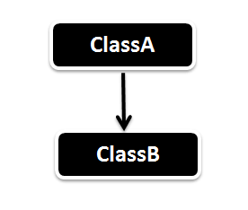
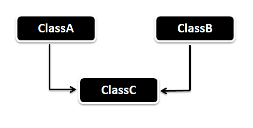
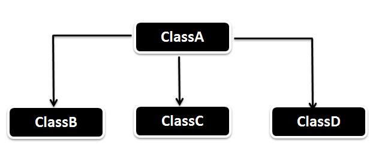
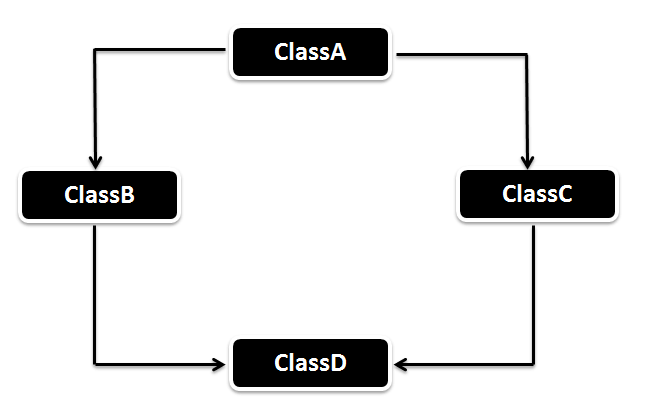

Inheritance in Java
Inheritance - Thừa kế, là một trong những khái niệm (concept) quan trọng trong OOP. Java Inheritance là một quá trình mà trong đó, một class có thể sử dụng lại method và thuộc tính (fields/properties) của một class khác. Derived class - subclass tái sử dụng methods và variables của Base Class - Supper Class
Inheritance diễn tả mỗi quan hệ IS-A, hay còn được gọi là Parent-Child relationship. Parent class có thể có rất nhiều Child class, tuy nhiên mỗi Child class chỉ thuộc 1 Parent Class.
Child class kế thừa Parent class bằng các sử dụng từ khóa extends.
Inheritance in Java Example
Xem file : InheritanceInJava.java
Có một hiểu nhầm nho nhỏ ở hồi xưa, cứ tưởng đối với thằng super class lúc nào cũng phải set abstract cho nó thì mấy thằng con mới kế thừa được. Nhưng rõ ràng trong ví dụ này, chẳng có từ khóa abstract nào cả, mà lũ kia vẫn chạy bt.
Different Types of Inheritance in Java
Dưới đây là các kiểu kế thừa khác nhau trong Java, một số đuộc hỗ trợ trược tiếp, một số phải sử dụng interface.
Interface thực hiện kế thừa ntn???
Single Inheritance
Single inheritance - Đơn thừa kế cho phép lớp thừa kế (derived class - subclass) kế thừa đặc tính và hành vi từ một lớp cha duy nhất
Multiple Inheritance (Through Interface)
Multiple inheritance - đa thừa kế (một lớp con có thể thừa kế từ nhiều lớp cha) không được hỗ trợ trong Java vì nó khiến mọi thứ trở nên nhập nhằng và khó quản lý
Thay vào đó, Java đưa ra một khái niệm khác, đó là Interface.
Khái niệm Multiple Inheritance phải giống như dưới đây:
Trong mô hình này, class C đều kế thừa từ Class A và Class B. Tuy nhiên, vì Java không support 2 cái này, nên ta đổi nó thành Interface A và Interface B. và cho class C implement cả 2 Interface đó.
Xem ví dụ : Vehicle.java
Tại sao Java không hỗ trợ đa thừa kế.
Giả sử một class được thừa kế từ 2 lớp cha, và 2 lớp cha này có 2 phương thức cùng tên. Khi đó, trình biên dịch sẽ không biết chính xác nếu gọi C.commonFunction() thì liệu nó sẽ gọi thằng A.commonFunction() hay B.commonFunction()
Tuy nhiên, khi sử dụng interface, chính lớp con mới quyết định việc triển khai phương thức mà nó implement. Vì vậy, khi này gọi C.commonFunction, thì nó sẽ là cái function do chính thằng C quy định, rất rõ ràng và không có nhập nhằng gì ở đây.
Ta xem thêm một ví dụ về đa kế thừa bằng interface nữa nhé.
Multilevel Inheritance
Multilevel xảy ra khi mà Class B kế thừa từ Class A và Class C kế thừa Class B. Xem mô hình dưới đây.

Trong trường hợp này, Class B như một kế thừa trực tiếp, trong khi đó, lớp A như một kế thừa gián tiếp của lớp C.
Xem file TemporaryStaff.java để hiểu thêm ví dụ
Hierarchical Inheritance - Kế thừa có cấu trúc
Xem hình bên dưới
Trong mô hình dưới đây, khác với Single Inheritance (1), ở đây có nhiều thằng con cùng kế thừa một thằng cha. Mô hình này được gọi là Hierarchical Inheritance - (hierarchical - thứ bậc / cấu trúc).
Cái này cũng như thằng số 1, chỉ là nó khác là có nhiều thằng B thôi.
Hybrid Inheritance (Through Interface)
Hybrid Inheritance là sự kết hợp giữa Single Inheritance và Multiple Inheritance.
Xem mô hình dưới đây:
Ví dụ về 3 mô hình này có thể xem tại file TestInhertitance.java (in package practice.javaoop .inheritanceexample)
Kế thừa bằng Interface như thế nào??
Trong danh sách các loại kế thừa, ta thấy một vài trường hợp có sử dụng Interface trong đó.
Tuy nhiên kế thừa bằng interface ở đây có nghĩa là gì? Xem xét ví dụ về cái Multiple Inheritance, cái Class C implements interface A và B, nhưng bản thân nó đều phải viết code cho cái function showMessage. Vậy kế thừa ở đây có nghĩa là gì khi chính bản thân nó lại phải viết function đó 1 lần nữa.
Khác với abstract, interface hướng đến kế thừa phương thức. Khi một class nào đó implement một interface, thì tức là nó đang khai báo rằng "Tôi đạt một chuẩn" nào đó. Và khi đó, ta có thể sử dụng các object mà cùng khai báo một interface như là cùng được extends từ 1 class cha (ở đây chỉ nói đến phương thức thôi nhé).
Như vậy, cái tính kế thừa ở đây, tức là những class cùng implements một interface thì cũng coi như là có cùng 1 lớp cha - (Cha ở đây là interface về mặt method thôi nhé, nhắc lại chỉ là method thôi nhé) vì vậy nó có thể thao tác hoàn toàn giống nhau.
Ứng dụng của interface là khai báo các sườn method - những phương thức chung của các class. Nó mang tính khái quát và mô hình hóa chức năng.
Q: Có cách nào để tôi implements interface mà ko cần phải viết lại - overriding cái method của nó ko??
Tất nhiên, bạn cho cái class cha nào đó implements cái method đó, rồi khai báo method đó trong interface và cho thằng con implement cái method đó là được.
Xem trong ví dụ TestHybridInheritance nhé, ở đây cái interface A có yêu cầu triển khai một method : showDefaultMessage, tuy nhiên thằng ChildClass mặc dù yêu cầu implements Interface đó nhưng cái medthod đó được extend từ thằng ParentClass đã khai báo sẵn rồi nên nó ko cần phải implements cái đó nữa.
Tóm lại, tính kế thừa trong Interface nó chỉ mang tính chất là khai báo các class có những behavior giống nhau mà thôi. Về interface thì ta sẽ đi sâu qua các bài tiếp theo.
Access Modifier in Java
Cái này sẽ đi chi tiết trong bài tiếp theo
Method Overriding in Java Inheritance
Trong Java, tính đa hình thể hiện qua 2 chức năng
- Overload
- Overriding
Chúng ta sẽ đi sâu về bài này trong bài học tiếp theo nữa nhé.
Super Keyword in Inheritance
When Sub class has inherited the Parent class then we can use the Super keyword to call the Parent class methods and constructors.
- While calling the Constructors of the Parent class the super() has to be the first line in the Child class constructor.
- While calling the methods of the Parent class the super.MethodName() can be any where within the Child class method.